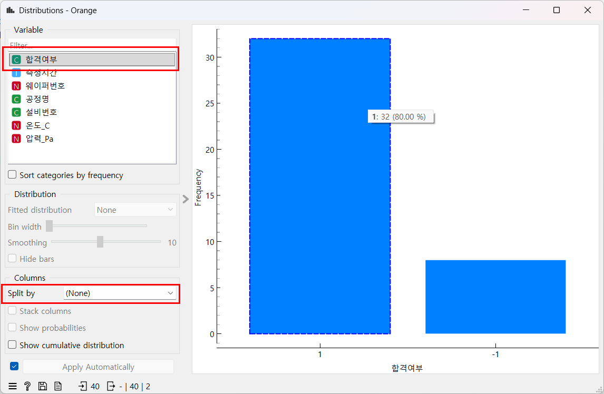
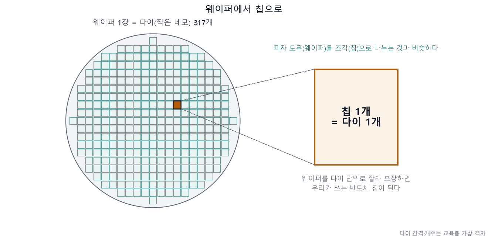
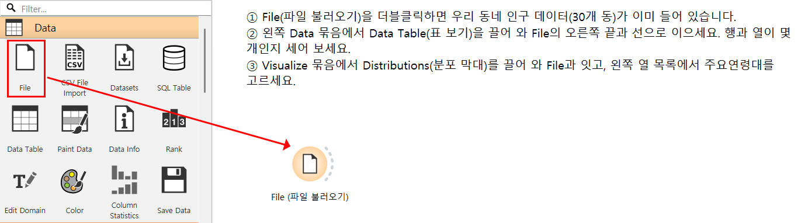
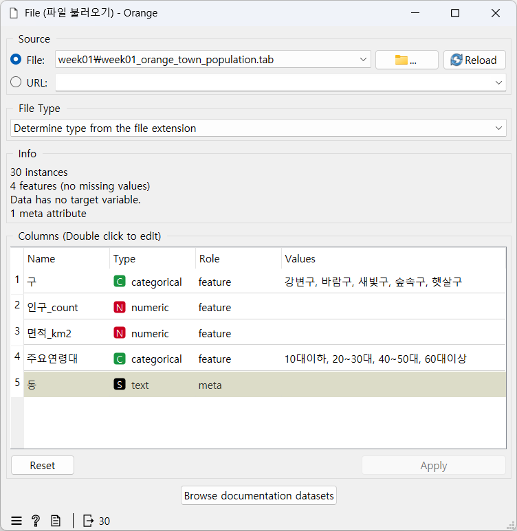
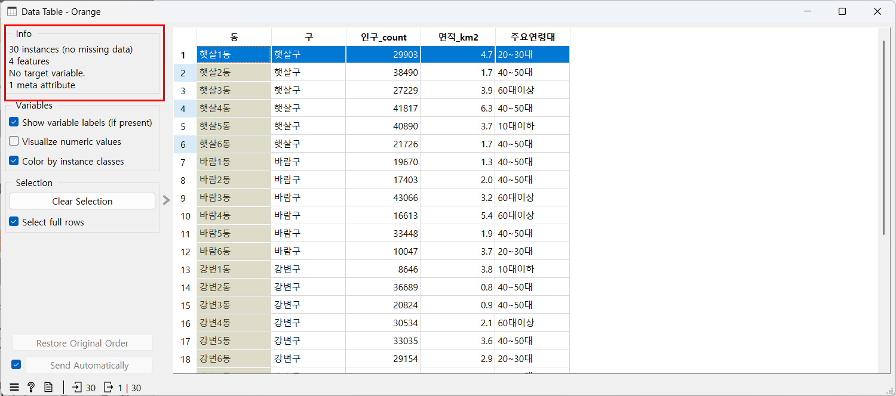
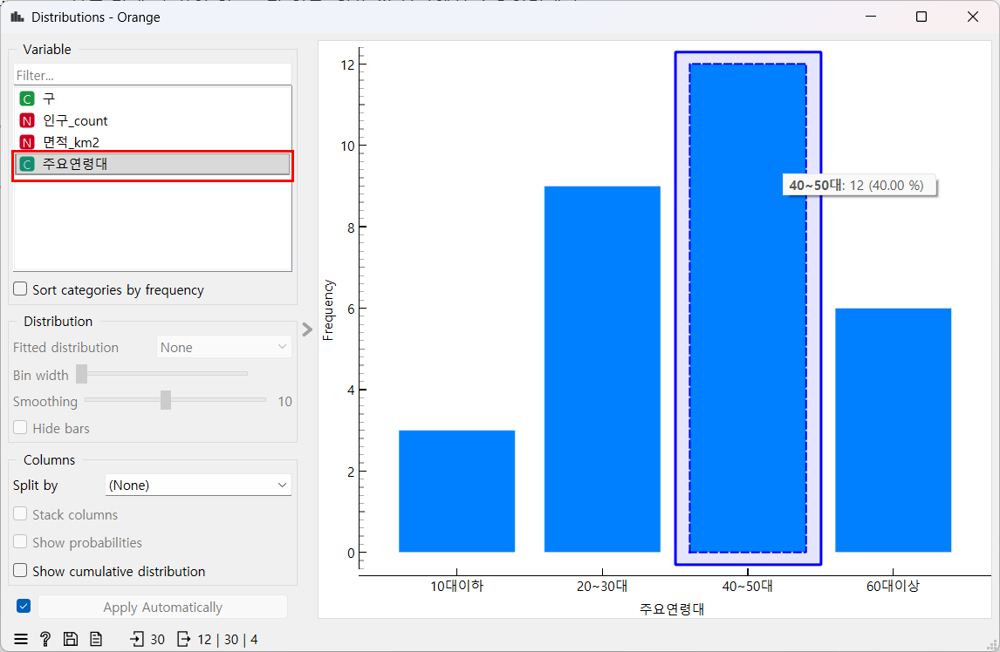
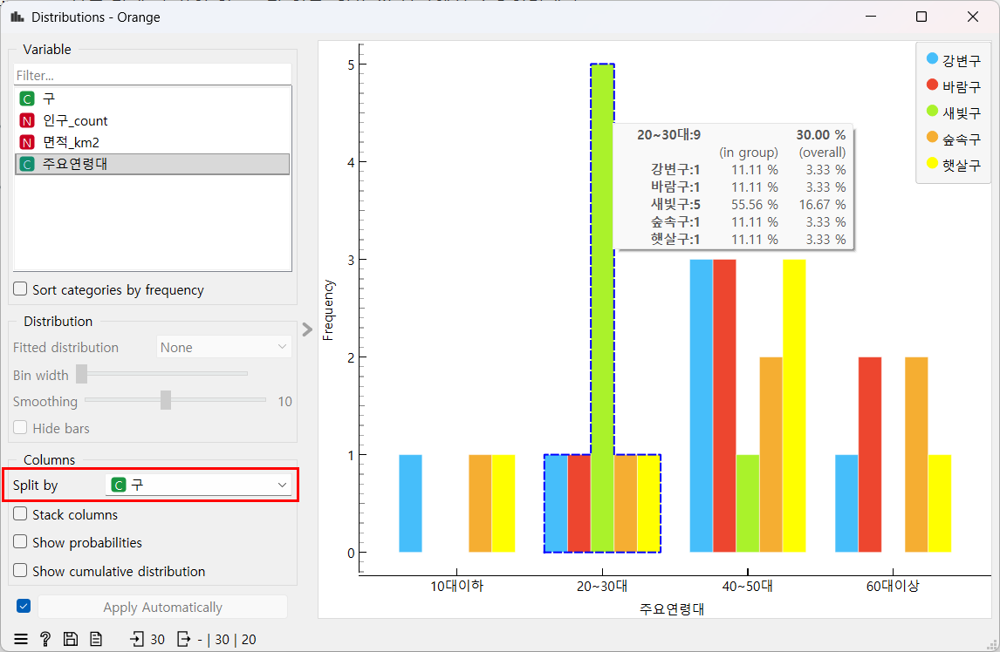
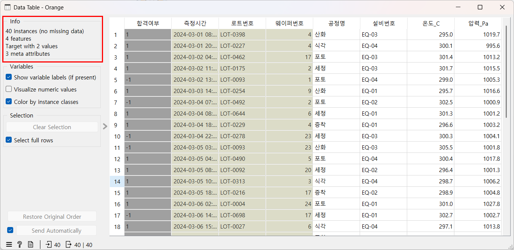
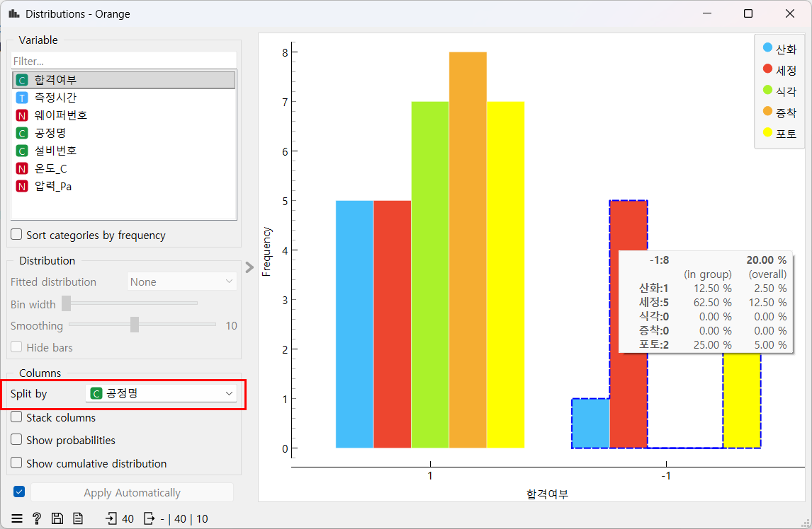

semiconductor_kit 폴더 구조는 그대로 둔다. 노트북과 Orange 파일이 폴더 위치를 기준으로 데이터를 찾는다.
1차시
반도체 공정과 데이터 처음 만나기
오늘의 질문: "반도체는 어떻게 만들어지고, 그 과정은 어떤 기록을 남길까?"
오늘의 미션 — 입사 첫날, 공장 기록표 40건을 받았다. 합격·불합격이 몇 건인지 직접 세어 보고, 한 문장으로 보고하자. 합격과 불합격은 각각 몇 건일까?
「신입 데이터 담당자의 10일」 첫째 날. 이야기 속 공장과 기록은 모두 교육용 가상 데이터다.

오늘 마지막에 Orange로 직접 그려 볼 막대. 왼쪽이 합격, 오른쪽이 불합격이다. 높이는 PART 2에서 직접 읽는다.
오늘의 학습 목표
- 웨이퍼·칩·공정이 무엇인지 생활 비유로 설명하고, 공장이 기록을 남기는 이유를 말할 수 있다.
- 변수에 값을 저장하고
print()와 f-string으로 문장을 출력할 수 있다. type()으로 숫자와 글자를 구분할 수 있다.- Orange3에서 표를 열어 행·열을 세고, Distributions 막대를 읽어 파이썬 결과와 비교할 수 있다.
오늘 수업 구성
| PART | 하는 일 |
|---|---|
| PART 1 · 파이썬 | 카페 주문 예제로 변수·type()·print()·f-string을 배우고, 공장 기록 40건으로 확인한다 |
| PART 2 · Orange3 | 우리 동네 인구 표로 위젯 세 개를 익히고, 같은 위젯으로 공장 기록표의 합격·불합격 막대를 본다 |
| PART 3 · 실습지 | 노트북 문제 3개 + Orange 1문제 + 해석 문장 1개 |
왜 이걸 배워야 할까?
- 10차시 동안 반도체 공장의 숫자를 다룬다. 숫자가 어디서 왜 생겼는지 알아야 표가 의미 있게 보인다.
- 변수와 출력은 그 숫자를 코드에 담고 문장으로 보고하는 가장 작은 단위다.
반도체와 공장 데이터 한눈에 보기
첫 시간이라 복습은 없다. 전공·코딩 경험이 없어도 괜찮다.
공정 이름을 외울 필요는 없다. 아래 표처럼 "무엇을 하는지"만 생활 비유로 기억하자.
| 공장 말 | 하는 일 | 생활 비유 |
|---|---|---|
| 웨이퍼 | 회로를 새기는 얇고 둥근 실리콘 원판 | 피자 도우 |
| 다이 · 칩 | 웨이퍼 위에 새긴 회로 한 칸(다이), 그것을 잘라 포장한 완성품(칩) | 피자 조각 |
| 공정 | 웨이퍼에 하는 작업 한 가지(산화, 포토, 식각, 증착 …) | 레시피의 한 단계 |
| 로트 | 함께 이동하고 함께 작업하는 웨이퍼 묶음 | 같은 오븐에 함께 들어간 판들 |
| 설비 | 공정을 실제로 하는 기계(EQ-01 등) | 오븐 |
| 센서 기록 | 설비 안의 온도·압력을 재서 남긴 숫자 | 요리 중 온도계를 보고 적은 메모 |

이 그림의 웨이퍼 한 장에는 다이(작은 네모)가 317개다. 실제 개수는 칩 크기에 따라 다르다. 다이 하나를 잘라 포장하면 칩 하나가 된다(교육용 가상 격자).
웨이퍼 한 장 위에서 칩 수백 개 이상(칩 크기에 따라 다르다)을 한꺼번에 만든다. 그래서 한 번의 작업 기록이 칩 여러 개의 운명과 이어진다.
찾아보기
AI 답은 틀릴 수 있으니 확인 포인트와 비교하세요. 개인정보·실제 회사 데이터는 넣지 마세요.
검색어 웨이퍼 왜 둥근가
ChatGPT에 물어보기 — 복사해서 붙여 넣기
반도체를 처음 배우는 사람에게 웨이퍼가 왜 둥근 모양인지 3문장으로 설명해줘. 어려운 용어는 풀어서 말해줘.좋은 답이라면 "실리콘 덩어리(잉곳)를 원기둥 모양으로 키운 뒤 얇게 썰어 만들기 때문에 둥글다"는 내용이 들어 있다. 가장자리의 네모 칸은 온전하지 않아 버려지기도 한다는 설명이 붙을 수 있다.
공정 지도 — 칩이 만들어지는 8단계
칩을 만드는 큰 단계는 여덟 개라서 흔히 "반도체 8대 공정"이라고 부른다. 이 과정에서는 아래 그림을 공정 지도라고 부른다.
앞으로 데이터를 볼 때마다 "공정 지도의 몇 번에서 나온 기록인가"를 이 번호로 알려 준다. 이름을 외울 필요는 없다.

반도체 8대 공정을 생활 비유로 본 흐름. ②~⑥ 단계는 층을 쌓을 때마다 여러 번 되풀이한다(교육용 단순화). 전공정·후공정 분류는 자료마다 조금 다를 수 있다.
| 번호 | 하는 일 | 피자 가게라면 |
|---|---|---|
| ① 웨이퍼 제조 | 실리콘 덩어리를 얇고 둥글게 썰어 원판을 만든다 | 피자 도우(웨이퍼) 만들기 |
| ② 산화 | 웨이퍼 표면을 산소와 반응시켜 얇은 산화막(보호막)을 키운다 | 철이 녹슬듯 표면에 얇은 막 키우기 |
| ③ 포토 | 빛을 비춰 회로 그림을 웨이퍼에 옮긴다 | 사진 인화처럼 도우 위에 회로 그림 찍기 |
| ④ 식각 | 그림대로 필요 없는 부분을 깎아 낸다 | 판화처럼 그림 밖 부분 깎아 내기 |
| ⑤ 증착/이온주입 | 얇은 막을 한 겹 쌓는다(증착). 정해진 자리에 아주 작은 알갱이(이온)를 넣어 전기가 통하는 성질을 바꾼다(이온주입) | 토핑을 층층이 올리고 소스를 스며들게 하기 |
| ⑥ 금속 배선 | 층마다 금속 선을 깔아 회로 사이를 이어 전기가 흐르게 한다 | 층마다 재료 사이를 전선처럼 잇기 |
| ⑦ EDS(전기 검사) | 자르기 전 웨이퍼 상태에서 칩 하나하나에 전기를 넣어 제대로 동작하는지 검사한다 | 자르기 전, 조각(칩)마다 전기로 검사 |
| ⑧ 패키징 | 칩을 잘라 보호 껍데기에 담고 바깥과 연결한다 | 조각을 하나씩 포장 상자에 담기 |
- 칩은 회로를 여러 층으로 쌓는다. 그래서 ② 산화부터 ⑥ 금속 배선까지를 층마다 되풀이한다.
- 세정(씻기)은 따로 번호가 없다. 단계 사이마다 웨이퍼를 씻는다. 오늘 데이터의
공정명에 나오는 세정이 이것이다.
찾아보기
AI 답은 틀릴 수 있으니 확인 포인트와 비교하세요. 개인정보·실제 회사 데이터는 넣지 마세요.
검색어 반도체 8대 공정
ChatGPT에 물어보기 — 복사해서 붙여 넣기
반도체 8대 공정(웨이퍼 제조, 산화, 포토, 식각, 증착/이온주입, 금속 배선, EDS, 패키징)을 피자 가게에서 피자를 만드는 일에 비유해서 공정마다 한 줄씩 설명해줘. 그리고 이 중 어떤 단계를 여러 번 되풀이하는지도 알려줘.좋은 답이라면 순서가 공정 지도(①~⑧)와 같고, 산화부터 금속 배선까지가 층마다 되풀이된다는 점이 들어 있다. 자료에 따라 이온주입을 따로 세거나 이름이 조금 다를 수 있다 — 하는 일이 같으면 된다.
공장은 왜 기록을 남길까
웨이퍼 한 장은 수많은 단계를 거친다. 불량이 나오면 기록을 거슬러 올라가 어느 로트·설비·공정에서 무엇이 달랐는지 찾는다.
피자 가게도 판마다 오븐 번호와 온도를 적어 두면, 덜 익은 피자가 나왔을 때 어느 오븐의 어느 판이었는지 찾아갈 수 있다.
찾아보기
AI 답은 틀릴 수 있으니 확인 포인트와 비교하세요. 개인정보·실제 회사 데이터는 넣지 마세요.
검색어 반도체 공정 데이터 추적
ChatGPT에 물어보기 — 복사해서 붙여 넣기
반도체 공장이 공정마다 온도·압력 같은 기록을 남기는 이유를 피자 가게가 판마다 오븐 온도를 적어 두는 일에 비유해서 3문장으로 설명해줘.좋은 답이라면 두 가지가 들어 있다. ① 불량이 나왔을 때 기록을 거슬러 올라가 어디서 무엇이 달랐는지 찾는다(추적). ② 공정 조건이 정해진 범위 안에서 유지되는지 지켜본다(감시).
기록은 표(행과 열)로 쌓인다
오늘 받은 공장 기록표 week01_semiconductor_process_overview.csv의 앞 3행이다. 교육용 가상 데이터이고, 공정 지도 ②~⑤와 세정에서 남긴 설비 기록이다. 설비 4대가 여러 공정 기록을 함께 남겼다(교육용 가상 기록).
| 측정시간 | 로트번호 | 웨이퍼번호 | 공정명 | 설비번호 | 온도_C | 압력_Pa | 합격여부 |
|---|---|---|---|---|---|---|---|
| 2024-03-01 08:00 | LOT-0398 | 4 | 산화 | EQ-03 | 295.0 | 1019.7 | 1 |
| 2024-03-01 20:00 | LOT-0227 | 4 | 식각 | EQ-04 | 300.1 | 995.6 | 1 |
| 2024-03-02 04:00 | LOT-0462 | 17 | 포토 | EQ-03 | 301.4 | 1013.2 | 1 |
- 한 행 = 어느 로트의 몇 번 웨이퍼가 어느 설비에서 어떤 공정을 거친 기록 한 번. 둘째 행은 "LOT-0227의 4번 웨이퍼가 EQ-04에서 식각을 거쳤고 합격".
- 한 열 = 같은 종류의 값. 열 이름의 밑줄(
_) 뒤는 단위다._C= 섭씨 도,_Pa= 파스칼(압력 단위). 합격여부는1= 합격,-1= 불합격이다.
가상 값이라는 점 기억하기
온도·압력은 교육용 숫자라 실제 공정 조건과 다르다. 값의 크기는 해석하지 않고, 기록끼리 비교만 한다.
PART 1 파이썬 — 변수와 출력
실습 파일 받기와 노트북 열기
1
1차시 키트 week01_kit.zip을 내려받아 압축을 푼다(전체 차시 키트: student_kit.zip). 압축을 푼
2
Jupyter를 켠다. 방법은 설치 안내의 STEP 05 "노트북 열어 보기"에 있다(
semiconductor_kit 폴더에서 명령 프롬프트를 열고 python -m notebook 실행).3
브라우저에 뜬 Jupyter에서
notebooks → student → week01_student.ipynb를 연다. 맨 위 "막혔을 때" 셀을 먼저 읽는다.- 코드를 쓰는 칸이 셀이다. 셀을 클릭하고 Shift + Enter를 누르면 결과가 바로 아래 나온다.
- 코드 셀에서
#뒤에 쓴 글은 주석이다. 파이썬이 실행하지 않으므로 메모를 남길 때 쓴다. 노트북의# TODO: …줄이 주석이다. - 개념은 카페 주문(연습용 값)으로 배우고, 공장 기록은 "반도체 데이터로 확인하기"에서 다룬다.
Python — 첫 셀 실행하기
print("파이썬 준비 완료!")
실행 결과
파이썬 준비 완료!
print()는 괄호 안의 값을 화면에 보여 준다. 이 문장이 보이면 준비 끝이다.
변수 — 이름표가 붙은 상자
cups = 3 — 오른쪽 값(3)을 왼쪽 이름(cups) 상자에 저장한다.
=는 "같다"가 아니라 "저장하라"는 뜻이다.
커피 한 잔 4,500원, 3잔 주문. 값을 상자에 담고, 담은 값끼리 곱한 결과도 새 상자에 담는다.
Python — 쉬운 예제: 변수 만들기 (노트북 2단계)
coffee_price = 4500
cups = 3
print(coffee_price)
print(cups)
total_price = coffee_price * cups
print(total_price)
실행 결과
4500 3 13500
*는 곱하기다. total_price에는 계산 결과 13500이 저장된다.
변수 이름 규칙
영문자·숫자·밑줄(
_)로 쓰고, 숫자로 시작하지 않는다. 대문자와 소문자는 다른 이름이다(cups와 Cups는 다르다).
찾아보기
AI 답은 틀릴 수 있으니 확인 포인트와 비교하세요. 개인정보·실제 회사 데이터는 넣지 마세요.
검색어 파이썬 변수 뜻
ChatGPT에 물어보기 — 복사해서 붙여 넣기
파이썬을 처음 배우는 사람에게 변수를 '이름표가 붙은 상자'에 비유해서 설명해줘. cups = 3 예시로 =가 무슨 뜻인지도 알려줘.좋은 답이라면 "
=는 같다는 뜻이 아니라 오른쪽 값을 왼쪽 이름에 저장한다"는 내용이 들어 있다. 같은 이름에 다시 저장하면 새 값으로 바뀐다는 설명이 붙을 수 있다.자료형 — type()으로 값의 종류 보기
값에는 종류(자료형)가 있다. 종류에 따라 할 수 있는 일이 다르다 — 숫자는 계산하고, 글자는 문장에 넣는다.
| 자료형 | 예 | 뜻 |
|---|---|---|
int | 3 | 정수(소수점 없는 수) |
float | 4.5 | 소수점이 있는 수 |
str | "아메리카노" | 글자(문자열). 따옴표로 감싼다 |
Python — 쉬운 예제: 자료형 확인하기 (노트북 3단계)
rating = 4.5
menu = "아메리카노"
print(type(cups))
print(type(rating))
print(type(menu))
실행 결과
<class 'int'> <class 'float'> <class 'str'>
type()은 괄호 안 값의 종류를 알려 준다. cups는 2단계에서 만든 상자라서 2단계를 먼저 실행해야 한다.
print()와 f-string — 값을 문장으로 출력하기
print()에 콤마로 값을 나열하면 사이에 빈칸을 넣어 출력한다.- f-string: 따옴표 앞에
f, 값이 들어갈 자리에{변수 이름}을 쓴다. 문장 속 빈칸에 값을 채워 넣는 방법이다. - 콤마 출력은 값을 빈칸으로 띄워 늘어놓을 뿐이고, f-string은 값이 들어간 하나의 자연스러운 문장을 만든다. 보고 문장에는 f-string을 쓴다.
Python — 쉬운 예제: 콤마 출력과 f-string (노트북 4단계)
print("메뉴:", menu, "잔 수:", cups)
print(f"{menu} {cups}잔 주문이 들어왔습니다.")
실행 결과
메뉴: 아메리카노 잔 수: 3 아메리카노 3잔 주문이 들어왔습니다.
주의 — f를 빼먹으면
오류 없이
{menu}가 글자 그대로 나온다. 결과에 중괄호가 보이면 따옴표 앞 f부터 확인한다.
계산한 값을 문장에 넣기
따뜻한 커피 6잔, 아이스 4잔이 팔렸다. 전체 잔 수와 아이스 비율을 구해 문장으로 만든다.
+는 더하기, /는 나누기, * 100은 백분율(%)로 바꾸기다.
Python — 쉬운 예제: 계산한 값 넣기 (노트북 5단계)
hot_count = 6
ice_count = 4
total = hot_count + ice_count
ice_rate = ice_count / total * 100
print(total, ice_rate)
print(f"전체 {total}잔 중 아이스는 {ice_rate}%입니다.")
실행 결과
10 40.0 전체 10잔 중 아이스는 40.0%입니다.
나누기(/)의 결과는 늘 소수점이 있는 수(float)라서 40이 아니라 40.0으로 나온다.
구경만 — input()
강사가 화면에서
name = input("이름을 입력하세요: ") 한 줄을 보여 준다. 실행하면 입력칸이 나오고, 키보드로 친 글자가 name에 저장된다. 오늘 실습에는 쓰지 않는다.
반도체 데이터로 확인하기
카페 예제와 같은 모양으로, 오늘 받은 공장 기록표(교육용 가상 데이터)를 다룬다. 오늘 파이썬은 표 파일을 직접 읽지 않는다(그건 4차시에 배운다). 그래서 노트북에는 표에서 센 값(합격 32, 불합격 8)이 미리 적혀 있다. 이 숫자가 맞는지는 PART 2에서 Orange 막대로 직접 세어 확인한다. 질문을 먼저 생각해 본 뒤 열어 보자. (노트북 6단계)
확인 1 — 미션 보고 문장 만들기
합격 건수와 불합격 건수를 각각 상자에 담고, 둘을 더한 전체 건수와 함께 한 문장으로 보고하면?
Python — 확인 1
pass_count = 32
fail_count = 8
total_count = pass_count + fail_count
print(f"오늘 기록 {total_count}건 중 합격은 {pass_count}건, 불합격은 {fail_count}건입니다.")
실행 결과
오늘 기록 40건 중 합격은 32건, 불합격은 8건입니다.
공장 말로 읽기: 40줄짜리 표가 이름 붙은 숫자 세 개와 보고 문장 하나로 줄었다. 이 문장이 오늘 미션의 보고 문장이다.
확인 2 — 불합격률은 몇 %일까
카페의 아이스 비율과 같은 모양으로 불합격률을 구하면?
Python — 확인 2
fail_rate = fail_count / total_count * 100
print(f"불합격률은 {fail_rate}%입니다.")
실행 결과
불합격률은 20.0%입니다.
공장 말로 읽기: 기록 40건 중 20.0%가 불합격 기록이다. 거꾸로 합격 기록은 80.0%다.
공장에서는 생산한 것 중 정상 제품이 나온 비율을 수율이라고 부른다. 오늘 합격 비율은 "기록 40건 중 합격 기록"의 비율이라 계산 모양은 같지만, 수율 그 자체는 아니다.
숫자 하나로는 모르는 것
"불합격률 20.0%"만으로는 불합격이 어느 공정·설비에서 나왔는지 알 수 없다. 그러려면 공정명·설비번호 같은 다른 열도 함께 봐야 한다. PART 2에서 Orange로 공정별로, 실습지에서 설비별로 나눠 본다.
실습 따라 하기
학생용 노트북을 위에서 아래로 실행하며 ____만 채운다. 7단계 문제 번호는 실습지 문제 1~3과 같다.
1
준비 — "막혔을 때"를 읽고 첫 셀을 실행한다. (노트북 1단계)
2
쉬운 예제 — 카페 주문으로 변수·자료형·f-string·계산을 실행한다. (노트북 2~5단계)
3
반도체 데이터로 확인하기 — 미션 보고 문장(40건 중 합격 32, 불합격 8)과 불합격률 20.0%. (노트북 6단계)
4
반도체 데이터 실습 — 설비 EQ-03의 기록(12건 중 불합격 3건)만 따로 담기, 보고 문장, 불합격률과 자료형. (노트북 7단계, 실습지 문제 1~3)
5
AI로 한 걸음 더 — AI가 만든 코드 예시를 실행해 결과만 확인한다. (노트북 8단계)
체크포인트 — 셀은 위에서 아래로
- 위 셀을 건너뛰면
NameError가 난다. 셀은 위에서 아래로 차례대로 실행한다. - 빈칸을 채우지 않고 실행하면
NameError: name '____' is not defined가 난다. 문제 2처럼 따옴표 바로 앞이 빈칸이면SyntaxError가 난다. - 결과가 이상하면 메뉴 Kernel → Restart Kernel and Run All Cells…로 맨 위부터 다시 실행한다. 아직 채우지 않은 첫 빈칸에서 실행이 멈추는 것은 정상이다. 커널은 노트북 뒤에서 코드를 실제로 실행하는 프로그램이다.
____는 빈칸 표시일 뿐이다. 밑줄 개수와 상관없이 지우고 필요한 만큼(글자 하나든 변수 이름 전체든) 쓴다.
PART 2 Orange3 — 표를 눈으로 보기
Orange3는 코드 대신 위젯(기능 상자)을 선으로 이어 데이터를 보는 프로그램이다. 오늘은 공장 기록표의 합격·불합격을 막대로 직접 세어 미션의 답을 확인한다.
PART 1에서 받은 키트를 그대로 쓴다. Orange 설치와 첫 실행은 설치 안내의 STEP 06에 있다(Orange 3.35 기준).
Orange 말 사전
| 말 | 뜻 |
|---|---|
| 캔버스 | 위젯을 놓고 선으로 잇는 가운데 하얀 작업판 |
| 위젯 | 한 가지 일을 하는 기능 상자. 더블클릭하면 자기 창이 열린다 |
워크플로(.ows) | 캔버스에 놓은 위젯과 연결을 통째로 저장한 파일 |
.tab | Orange가 읽는 표 파일. CSV와 내용은 같고, 열마다 종류·역할이 적혀 있다 |
| 툴팁 | 마우스를 올리고 잠시 기다리면 뜨는 작은 설명 상자 |
위젯 이름표
Orange 화면은 영어다. 오늘 쓰는 위젯 세 개의 이름을 먼저 익힌다.
| 위젯(화면 이름) | 어느 묶음에 있나 | 한국어 뜻 | 오늘 하는 일 |
|---|---|---|---|
File | Data | 파일 불러오기 | 표 파일을 연다. _start.ows에 이미 들어 있다 |
Data Table | Data | 표 보기 | 표를 펼쳐 보고, 행(instances)과 열(features)이 몇 개인지 센다 |
Distributions | Visualize | 분포 막대 | 한 열의 값마다 몇 개인지 막대로 본다. Split by로 막대를 다른 열의 색으로 나눈다 |
위젯 잇는 법
File 위젯 오른쪽 가장자리의 반원을 끌어 빈 곳에 놓으면 위젯 목록이 뜬다. 거기서 이을 위젯 이름을 고른다. 왼쪽 목록에서 위젯을 끌어 온 뒤 선으로 이어도 된다.
워밍업 — 우리 동네 인구
가상의 다섯 개 구(햇살구·바람구·강변구·숲속구·새빛구), 30개 동의 인구 기록이다. 열은 구, 동, 인구_count(_count = 사람 수), 면적_km2(제곱킬로미터), 주요연령대다.
1
Orange 3.35를 켜고 Orange 창 맨 위 메뉴 File > Open으로
orange3/week01/week01_1_town_start.ows를 연다. 캔버스에 File 위젯 하나와 안내 메모가 보인다.
2
File 위젯을 더블클릭한다. 파일 이름
week01_orange_town_population.tab과 아래 열 목록이 보이면 데이터가 들어온 것이다. 창을 닫는다.
3
File에
Data Table을 잇고 더블클릭한다. 왼쪽 Info 칸에서 행과 열의 수를 읽는다.
30 instances= 행 30개(동 30개).4 features= 분석에 쓰는 열 4개.1 meta attribute=동. 이름표 역할만 하는 열이라 Orange가 참고 열(meta)로 따로 둔다. 4 + 1 = 원래 표의 5열이다.
4
File에
Distributions를 잇고 더블클릭한다. 왼쪽 Variable 목록에서 주요연령대를 클릭한다. 막대 위에 마우스를 올리고 잠시 기다리면 툴팁에 개수가 뜬다.
- 막대 높이: 40~50대 12 · 20~30대 9 · 60대이상 6 · 10대이하 3. 가장 흔한 주요연령대는 40~50대다.
- 30줄을 다 읽지 않아도 막대 하나로 가장 흔한 값이 보인다.
5
같은 창 왼쪽 아래 Columns 칸의
Split by를 구로 바꾼다. 막대가 구마다 다른 색으로 나뉜다. 막대에 마우스를 올리면 툴팁이 표 모양으로 바뀌어 색(구)마다 개수를 보여 준다. 다시 None으로 바꾸면 한 색으로 돌아온다.
새빛구는 6개 동 중 5개 동의 주요연령대가 20~30대다. 열 하나를 더 함께 보니 전체 막대에서 안 보이던 동네 차이가 보인다.
공장과 잇기
공장에서는 동네 표의 한 행이 동 하나이듯, 공장 기록표의 한 행은 기록 1건이다. 주요연령대 막대로 가장 흔한 값을 본 것처럼 합격여부 막대로 합격·불합격 수를 보고, Split by 구처럼 Split by 공정명·설비번호로 나눠 본다.
반도체 데이터 — 공장 기록표 40건
파이썬에서 다룬 그 공장 기록표다. 공정 지도 ②~⑤와 세정에서 남긴 설비 기록이다(교육용 가상 데이터).
1
File > Open으로
orange3/week01/week01_2_process_start.ows를 연다. File을 더블클릭해 week01_semiconductor_process_overview.tab이 들어왔는지 확인한다.2
File에
Data Table을 잇고 Info 칸을 읽는다.
40 instances= 기록 40건. 파이썬 확인 1의total_count40과 같다.4 features=공정명·설비번호·온도_C·압력_Pa.Target with 2 values= 결과 열합격여부1개(값 두 종류: 1, -1).3 meta attributes=측정시간·로트번호·웨이퍼번호. 기록을 찾아가는 이름표 열이다.- 4 features + Target 1 + meta 3 = 원래 표의 8열이다.
3
File에
Distributions를 잇고 Variable 목록에서 합격여부를 클릭한다. 이 표에서는 Split by가 처음부터 합격여부로 잡혀 막대 색이 나뉘어 있다. 왼쪽 아래 Columns 칸의 Split by를 None으로 바꾼다.- 왼쪽 막대
1(합격) = 32, 오른쪽 막대-1(불합격) = 8. 이것이 오늘 미션의 답이다. - 막대에 마우스를 올리면
1: 32 (80.00 %),-1: 8 (20.00 %)처럼 개수와 비율이 함께 보인다.
4
Split by를 공정명으로 바꾸고 불합격(-1) 막대에 마우스를 올린다. 툴팁 표에서 공정마다 개수를 읽는다.
불합격 8건 중 5건이 세정 기록이다(산화 1 · 포토 2 · 식각 0 · 증착 0). 세정 기록은 모두 10건이다. 공정명이라는 열을 함께 보니 "세정을 더 살펴볼까?"라는 질문이 생긴다.
원인이라고 말해도 될까?
아직 아니다. 기록이 적어 우연일 수 있다. 지금은 세정을 원인 후보(더 확인할 대상)까지만 말한다. 원인인지는 더 많은 기록으로 확인해야 한다.
파이썬 결과와 비교
파이썬 변수에 담은 합격 32 · 불합격 8이 Distributions 막대 높이와 같다. 파이썬의 불합격률 20.0%와 Orange 툴팁의 20.00 %도 같은 숫자다.
막혔을 때
같은 폴더의
week01_1_town_done.ows, week01_2_process_done.ows를 열면 완성된 연결을 볼 수 있다. File에 빨간 글씨가 보이면 키트 폴더 구조가 바뀌지 않았는지 확인한다.
PART 3 실습지
1차시 실습지를 연다. 다섯 문제를 혼자 풀고, 정답은 접힌 상자를 열어 확인한다.
- 문제 1~3 — 노트북 7단계의 문제 1~3과 같다. 이번에는 설비 EQ-03 한 대의 기록만 다룬다.
- 문제 4 — Orange에서 Split by를
설비번호로 바꿔, 불합격이 가장 많은 설비를 찾는다. 문제 1과 비교한다. - 문제 5 — EQ-03 결과를 팀장에게 보고하는 해석 문장 하나를 쓴다. 다 쓰면 짝과 서로 읽어 준다.
핵심 용어 카드
웨이퍼
Wafer
- 한 줄 설명
- 회로를 새기는 얇고 둥근 실리콘 원판. 한 장에서 칩이 수백 개 이상(칩 크기에 따라 다름) 나온다.
- 쉬운 비유
- 피자 도우. 칩은 피자 조각이다.
- 데이터에서의 예
웨이퍼번호열(로트 안에서 몇 번째 웨이퍼인지).- 자주 하는 오해
- 웨이퍼 한 장 = 칩 한 개가 아니다. 한 장 위에 칩 여러 개를 함께 만든다.
공정
Process
- 한 줄 설명
- 웨이퍼에 하는 작업 한 가지(산화, 포토, 식각, 증착 …).
- 쉬운 비유
- 레시피의 한 단계.
- 데이터에서의 예
공정명열(산화, 포토, 식각, 증착, 세정).- 자주 하는 오해
- 한 바퀴 돌면 끝이 아니다. 층마다 ②~⑥을 되풀이한다.
변수
Variable
- 한 줄 설명
- 값에 이름을 붙여 저장하는 상자.
- 쉬운 비유
- 이름표가 붙은 상자.
- 데이터에서의 예
pass_count = 32- 자주 하는 오해
=를 "같다"로 읽기 쉽다. "오른쪽 값을 왼쪽에 저장하라"는 뜻이다.
f-string
Formatted String
- 한 줄 설명
- 따옴표 앞
f와{변수 이름}으로 문장에 값을 채우는 방법. - 쉬운 비유
- 문장 속 빈칸에 값을 채워 넣기.
- 데이터에서의 예
f"합격은 {pass_count}건"- 자주 하는 오해
f를 빼도 오류가 나지 않는다. 대신 중괄호가 글자 그대로 나온다.
데이터
| 파일 | 크기 | 쓰는 곳 |
|---|---|---|
data/weekly/week01/week01_semiconductor_process_overview.csv | 40행 8열 | 공장 기록표. 파이썬 확인 1·2와 Orange 반도체 데이터(orange/ 폴더의 같은 이름 .tab) |
data/weekly/week01/week01_orange_town_population.csv | 30행 5열 | Orange 워밍업 — 우리 동네 인구 |
두 파일 모두 교육용 가상 데이터다. 열 설명은 데이터 설명서에 있다. 오늘 파이썬은 표를 직접 읽지 않고, 센 결과(32, 8)만 변수에 담는다. 표를 코드로 여는 것은 4차시부터다.
주의할 점 & 자주 발생하는 오류
오류 1 — 글자에 따옴표를 빼먹었을 때
menu = 아메리카노라고 쓰면 NameError: name '아메리카노' is not defined가 난다. 따옴표가 없으면 파이썬이 글자를 변수 이름으로 읽는다. "아메리카노"처럼 감싼다.
오류 2 — 변수 이름의 대소문자·철자가 다를 때
cups를 만들고 print(Cups)라고 쓰면 NameError: name 'Cups' is not defined가 난다. 위 셀을 실행하지 않았을 때도 같은 오류가 난다. 이름을 그대로 베껴 쓰고, 위 셀부터 차례로 실행한다.
오류 3 — f-string의 f를 빼먹었을 때
오류 없이
합격은 {pass_count}건처럼 중괄호가 글자 그대로 나온다. 따옴표 바로 앞에 f가 있는지 확인한다.
주의 — 오류 없이 틀린 숫자가 나올 때
비율을 구할 때 나누는 수를 잘못 고르면 오류 없이 엉뚱한 숫자가 나온다. 카페의
total(10), 공장 전체의 total_count(40), EQ-03의 eq03_count(12)는 서로 다른 상자다. "무엇 중에서의 비율인가"를 먼저 정하고 그 상자를 쓴다.
결과 정리 & 퀴즈
오늘의 반도체 이해 포인트
- 웨이퍼 한 장 위에 칩(다이) 수백 개 이상을 함께 만들고, ② 산화부터 ⑥ 금속 배선까지를 층마다 되풀이한다. 이 흐름이 공정 지도 ①~⑧이다.
- 공장은 공정마다 온도·압력 같은 조건과 합격/불합격을 기록한다. 오늘 표의 한 행은 "어느 로트의 몇 번 웨이퍼가 어느 설비에서 어떤 공정을 거친 기록 한 번"이다.
- 파이썬: 합격 32, 불합격 8을 변수에 담아 "오늘 기록 40건 중 합격은 32건, 불합격은 8건", "불합격률은 20.0%"로 보고했다.
- Orange: Distributions 막대 높이 32와 8이 파이썬 숫자와 같았다. 공정명으로 나누면 불합격 8건 중 5건이 세정이었다(원인 후보).
나머지 문항은 실습지와 수업 뒤 퀴즈로 복습한다.
Q1. (객관식) 웨이퍼와 칩의 관계로 알맞은 것은?
정답: A. 피자 도우(웨이퍼)를 조각(칩)으로 나누는 것과 비슷하다.
Q2. (객관식)
print("합격은 {pass_count}건입니다.")를 실행하면 무엇이 나올까? (pass_count는 32)정답: B. 따옴표 앞에
f가 없어서 중괄호가 글자 그대로 나온다.Q3. (객관식) Orange Distributions에서
합격여부를 골랐을 때 막대 두 개가 보여 주는 것은?정답: A. 파이썬 변수
pass_count, fail_count와 같은 숫자다.AI로 한 걸음 더
ChatGPT에 이렇게 물어봤다. (노트북 8단계)
ChatGPT에 보낸 질문 — 복사해서 붙여 넣기
합격 32건, 불합격 8건일 때 합격률을 계산해서 90% 이상이면 "정상", 아니면 "점검 필요"라고 출력하는 짧은 파이썬 코드를 만들어 줘.아래는 받은 코드의 예시다. if/else는 3차시에 배운다. 지금은 실행해서 결과만 확인한다.
Python — AI가 만든 코드 예시
pass_count = 32
fail_count = 8
total = pass_count + fail_count
pass_rate = pass_count / total * 100
if pass_rate >= 90:
print(f"합격률 {pass_rate}% → 정상")
else:
print(f"합격률 {pass_rate}% → 점검 필요")
실행 결과
합격률 80.0% → 점검 필요
AI 코드를 다룰 때
AI가 준 코드와 숫자는 직접 실행해서 확인한다. 90%는 연습용 기준이다.
과제(다음 차시까지)
과제 1 — 내 카페 주문서
노트북 5단계의 잔 수(
hot_count, ice_count)를 내가 정한 숫자로 바꿔 다시 실행하고, f-string 문장이 어떻게 바뀌는지 확인한다.
과제 2 — 내 말로 설명하기(코드 없음)
노트북 맨 아래 빈 코드 셀에
#으로 시작하는 주석 줄로, "웨이퍼·칩·공정"을 피자 가게 비유로 두세 줄 적는다(예: # 웨이퍼는 피자 도우다.). 글만 쓰는 칸(마크다운 셀)을 쓰고 싶다면 셀을 고른 뒤 위쪽 칸의 종류를 Code에서 Markdown으로 바꾸고 Shift + Enter를 누른다.
핵심 질문 → 데이터 연결
- 질문: 반도체는 어떻게 만들어지고, 그 과정은 어떤 기록을 남길까?
- 만드는 법: 웨이퍼 한 장 위에 칩 여러 개를, 공정 지도 ①~⑧을 따라 만든다. ②~⑥은 층마다 되풀이한다.
- 남는 기록: 로트·설비·공정·조건·결과가 한 행. 오늘 기록 40건 → 합격 32 / 불합격 8 → "불합격률은 20.0%입니다."
다음 차시 예고
2차시 예고
내일의 미션 — 팀장이 EQ-03 설비 온도 7개를 메모로 줬다. 최고·최저·평균을 정리해 보고하자.
오늘은 상자 하나에 값 하나를 담았다. 다음에는 여러 값을 한 번에 담는 리스트와 이름표를 붙이는 딕셔너리를 배운다. Orange에서는 표의 한 열을 숫자로 요약하는 Feature Statistics를 쓴다.